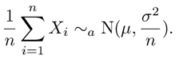
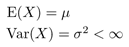

Dice and coins
When you throw a die ten times, you rarely get ones only. The usual result is approximately same amount of all numbers between one and six. Of course, sometimes you may get a five sixes, for example, but certainly not often.
If you sum the results of these ten throws, what you get is likely to be closer to 30-40 than the maximum, 60 (all sixes) or on the other hand, the minimum, 10 (all ones).
The reason for this is that you can get the middle values in many more different ways than the extremes. Example: when throwing two dice: 1+6 = 2+5 = 3+4 = 7, but only 1+1 = 2 and only 6+6 = 12.
That is: even though you get any of the six numbers equally likely when throwing one die, the extremes are less probable than middle values in sums of several dice. Try:
throw one die 900 times | throw two dice 900 times | throw ten dice 900 times
The same applies to throwing coins. When you drop a handfull of coins on the floor, it is extremely rare that all of them end up facing the same way. Again, it may happen sometimes, but the usual result is that there are about as many heads as there are tails. Let us agree that heads=0, tails=1 and try a few simulations:
throw one coin 500 times | throw three coins 500 times | throw a handful (43) coins 2000 times | throw six coins 10000 times
The bell curve
Small variations from the average are of course more common than large ones. Thus, as you probably noticed if you tried the simulations above, the probabilities of different sums follow roughly the normal distribution or "Gauss bell curve" whose center is halfway between the smalles and largest possible sums. This halfway is called the expected value.
Expected value (i.e. center of normal distribution) is halfway between the minimum and maximum values only if all the cases are equally likely; such as in throwing dice and coins (where the probablities of all the cases are 1/6 and 1/2, respectively). For example, when throwing a dart on a dart board, it is easier to get one of the low scores than the bull's eye. Note, however, that even when all cases are not equally likely, extreme sums are still less common than the ones near middle. The sum of several throws therefore still approximately follows the normal distribution:
Throw one dart 3000 times | Throw 3 darts 3000 times | Throw 20 darts 500 times
So, it doesn't matter if the distribution is symmetric or biased; sum of several events still follow the normal distribution - and only the middle (expected value) and "steepness" (variance) vary.
Arbitrary distributions
In fact, when you sum many enough events, the probability function doesn't matter at all as long as the amount of different sums is finite and you don't get the one and same number all the time. Examples:
Sine wave distribution is far from symmetric:
One
sine wave 10000 times |
Two
sine waves 10000 times |
Five
sine waves 10000 times
The tangent distribution is not particularily symmetric either, and is moreover discontinous:
One
tangent 10000 times |
Three
tangents 10000 times |
Twelve
tangents 10000 times
...and as a final touch:
completely
random distribution |
sum of five
completely random distributions 30000 times
Because most naturally occuring measurable phenomena (such as the height of humans) are depended on more than one condition (in the human height case: nutrition, several genes, environment, personal history, ...), this all leads to an extremely important fact: almost all measurable "random" variables in real world follow some kind of normal distribution.
The formal representation of the central limit theorem looks like this:
,
when X1, X2,... are independent
observations
of random variable X, to which applies:

 This work is dedicated to the
Public Domain.
This work is dedicated to the
Public Domain.
Demo is open source and written in Rust + Wasm + Javascript, see Github repository.